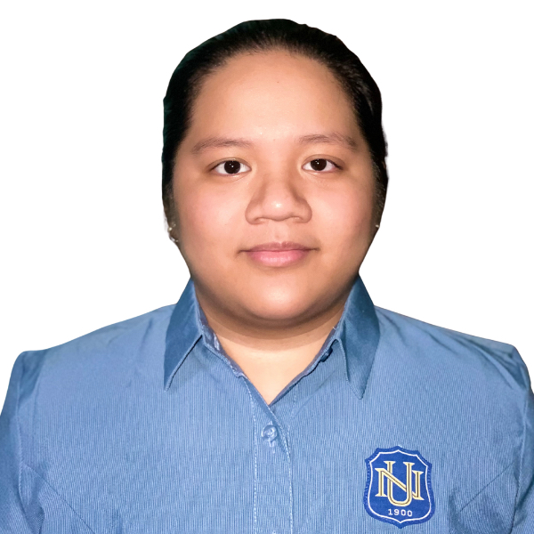

A closer look at my IT journey and goals

I am currently taking up BS Information Technology at National University. I chose Mobile and Web Applications because I’ve always been curious about how apps and websites are built and maintained.
My interest in technology started through gaming. At first, I just enjoyed playing, but later on I became curious about how everything works behind the scenes, which pushed me to start learning and creating my own projects.
My goal is to become a Full Stack Developer. I want to learn both frontend and backend so I can build complete systems from start to finish.
I know there’s still a lot for me to learn, so I try to improve step by step and stay updated with new technologies as much as possible.
Email: sapnoml@students.national-u.edu.ph
GitHub: github.com/ang-sap